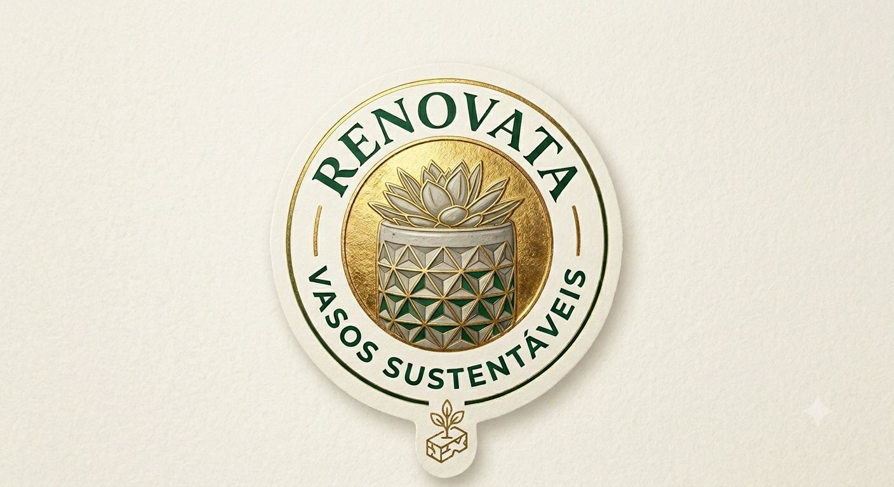

Vasos Sustentáveis · Brasil
Vasos feitos com materiais 100% renováveis.
Design que envelhece bem. Propósito que fica.
Nossa essência
Cada vaso Renovata nasce de uma escolha consciente: usar apenas o que a natureza pode regenerar. Bambu, argila reciclada, cimento orgânico. Formas que respeitam o tempo das coisas.
Quando um vaso encerra seu ciclo, ele volta. Compostado, devolvido, renovado. Não deixamos rastro — apenas raízes.
Conhecer a coleçãoFontes certificadas, colheita controlada.
Design que dura décadas, não temporadas.
Parte de cada venda vai para reflorestamento.
Fim de ciclo limpo. Nenhum resíduo eterno.
Coleção 2025
Cada peça é desenhada para envelhecer com beleza e ser devolvida à terra ao final do ciclo.
Bambu Natural
Fibra de bambu prensada a frio, 100% biodegradável. Textura natural única que muda levemente com o tempo — como tudo que é vivo. Ideal para plantas de interior com rega moderada.
Argila Reciclada
Argila mista com pó de resíduos agrícolas. O padrão geométrico é gravado à mão, tornando cada peça única. Resistente à umidade e com visual que remete às origens da Renovata.
Concreto Verde
Cimento com aditivos orgânicos e faixa verde característica. Forma cúbica de linhas limpas que se adapta a qualquer ambiente — da varanda ao escritório. Durável e com alma.
Como funciona
Navegue pela coleção e selecione o vaso certo para o seu espaço e planta.
Cada peça é feita sob encomenda no nosso ateliê com materiais selecionados.
Embalagem 100% reciclável. Enviamos com cuidado para todo o Brasil.
Quando quiser trocar, trocamos com desconto e reutilizamos o material.
Depoimentos
★★★★★
"O Vaso Sereno chegou perfeito. A textura do bambu é incrível e combina com qualquer ambiente. Já pedi mais dois."
★★★★★
"Finalmente uma marca que pensa no pós-consumo. Comprei, usei anos e quando quis trocar, ganhei desconto. Impecável."
★★★★★
"Presentei minha mãe com o Vaso Raiz. O padrão geométrico é lindo de perto. Ela pediu mais três."
Comece agora
Fale com a gente para montar o conjunto ideal para o seu espaço.